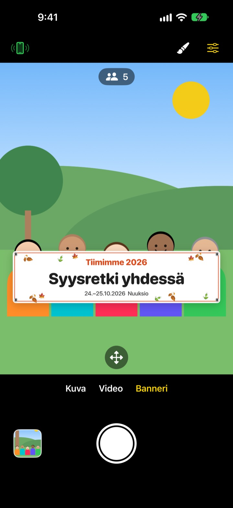
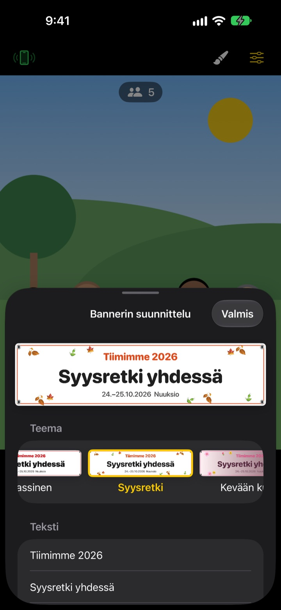

Ryhmäkuva bannerin kanssa.
Ilman painettua banneria.
Kirjoita teksti, valitse teema, ja banneri asettuu suoraan porukan eteen. Kaverin iPhonesta tulee kaukosäädin yhdellä QR-skannauksella, joten myös kuvaaja pääsee kuvaan.
Kaikki ominaisuudet ovat ilmaisia. Vaatii iOS 17:n tai uudemman.

Tee oma banneri
Muokkaa tekstiä ja napauta teemaa. Kun painat laukaisinta, se laskee kolmeen kuten sovelluksessa.
Tilaatko bannerin yhtä kuvaa varten?
Tilaat sen, raahaat retkelle, ja jälkeenpäin kukaan ei tiedä, minne sen laittaisi. Eikä kukaan jää ottamaan kuvaa, joten joku puuttuu aina. ShutterLink tuo bannerin kamerakuvaan ja tekee kaverin iPhonesta kaukosäätimen, jotta koko porukka pääsee bannerin kanssa kuvaan.
Sopiva banneri minuutissa
Valitse 13 teemasta, kuten syysretki, kevään kukat, pikkujoulut, syntymäpäivä, urheilupäivä, valmistujaiset, häät ja yrityksen työpaja, ja kirjoita enintään kolme riviä omaa tekstiä.
Vaihda taustaa, fonttia, koristeita, värejä ja mittasuhteita, ja lisää oma logo. Valitse kangas, vinyyli tai paperi: kangasbanneri notkahtaa, rypistyy ja hulmuaa tuulessa kuin oikea.

Kaukosäädin ilman asennusta
Napauta vasemman yläkulman kaukosäädinpainiketta, niin näkyviin tulee QR-koodi. Kaveri skannaa sen tavallisella Kamera-apilla, ja ShutterLink Remote aukeaa heti App Clipinä ja yhdistää.
Kaukosäätimen livekuvassa näkyy jopa banneri, joten rajaa kuva ja paina laukaisinta. Jokainen kuva tulee heti kaukosäätimenä olevaan iPhoneen, joten kaveri ilman sovellusta voi tallentaa ja jakaa sen saman tien.
Kolme vaihetta alkuun
- 1
Aseta iPhone
Avaa ShutterLink ja aseta iPhone jalustalle tai hyllylle.
- 2
Sijoita banneri
Valitse alhaalta Banneri, aseta siveltimellä teksti ja teema ja napauta lattiaa siinä, missä porukka seisoo.
- 3
Nosta kämmen
Nosta kämmen tai paina kaukosäätimen laukaisinta. Ajastin laskee ja ottaa kuvan.
Tehty ryhmäkuviin
- Kämmenele · taputuslaukaisu
- Nosta avoin kämmen kameraa kohti tai taputa kerran kovaa, niin ajastin käynnistyy
- Hymylaukaisu
- Ottaa kuvan itse, kun kaikki hymyilevät silmät auki
- Ajastin 3 · 5 · 10 · 20 · 30 s
- Ääni laskee alaspäin, salama vilkkuu tahdissa ja kaukosäädin värisee kädessä
- Pyydä kaikkia katsomaan kameraan
- Napauta, niin kuvaava iPhone huutaa kaikkia katsomaan objektiiviin
- Sarja 3 · 5 kuvaa
- Valitsee parhaan kuvan, jossa kaikilla on silmät auki. Voit vaihtaa sen toiseen galleriassa
- Henkilöt · reunat · vesivaaka
- Laskee kuvassa olevat ihmiset, varoittaa jos joku on reunalla ja näyttää vesivaa'an, kun puhelin on vinossa
- Intervalli 3 s – 1 min
- Tallenna auringonlasku tai työn eteneminen tasaisin välein
- Kameran säätimet
- Tarkennus ja valotus napauttamalla, valotuksen korjaus, salama, ruudukko, zoom 0,5x:stä jopa 10x:ään mallin mukaan, etu- ja takakamera, video
- Helppo tila
- Kaukosäädin näyttää vain yhden ison laukaisinpainikkeen, jota kuka tahansa osaa painaa
- Äänenvoimakkuuspainikkeet · Kameran säädin
- Ota kuva suoraan kuvaavalla iPhonella ilman kaukosäädintä
Banneritilassa salama, sarjakuvaus, zoom ja etukamera eivät ole käytössä. Ajastin, kämmenlaukaisu ja kaukosäädin toimivat normaalisti.
Kaikki ominaisuudet ovat ilmaisia
Ilmainen
- Banneritila ja 13 teemaa
- Kaukosäädin ilman asennusta (App Clip)
- Laukaisu kämmenellä, taputuksella ja hymyllä sekä ajastin
- Paras kuva, henkilölaskuri ja vesivaaka
- Video ja intervallikuvaus
Anna tippiä (vapaaehtoinen)
- Lähetä pieni, keskikokoinen tai iso tippi Asetuksista
- Tippi ei avaa eikä lukitse mitään
Ei tilaus. Maksat kerran, vain kun annat tippiä.
Ei mainoksia eikä tiliä.
Usein kysyttyä
Mitä tarvitsen?
Asenna ShutterLink kuvaavaan iPhoneen (iOS 17 tai uudempi). Kaukosäätimenä olevaan iPhoneen ei asenneta mitään, se tarvitsee internetin vain ensimmäisellä App Clipin avauskerralla. Pidä Bluetooth päällä kummassakin ja puhelimet lähellä toisiaan, yleensä alle 10 metrin päässä.
Skannaan QR-koodin, mutta App Clip ei aukea.
Tarkista, että kaukosäätimenä olevalla iPhonella on internetyhteys. Voit myös syöttää ShutterLink Remoteen kuvaavan iPhonen nelinumeroisen koodin ja napauttaa Yhdistä. Tarkista lisäksi, ettei App Clipejä ole estetty kohdassa Asetukset › Ruutuaika › Sisältö- ja tietosuojarajoitukset.
Se jää kohtaan ”Etsitään kameraa…”.
ShutterLinkin täytyy olla auki kuvaavan iPhonen näytöllä. Tarkista kummastakin puhelimesta, että Bluetooth on päällä kohdassa Asetukset › Bluetooth. Koodi vaihtuu aina, kun sovellus avataan, joten jos avasit sen uudelleen, käytä uutta QR-koodia tai koodia ja napauta Yritä uudelleen.
Näkyviin tulee ”Bluetooth-lupa evätty”.
Laita ShutterLink päälle kohdassa Asetukset › Tietosuoja ja suojaus › Bluetooth. Kaukosäädin on App Clip, eikä se välttämättä näy listassa. Skannaa silloin QR-koodi uudelleen ja napauta Salli, kun sitä kysytään.
Livekuva nykii tai on sumea.
Livekuva on tarkoituksella pienennetty, jotta se kulkee Bluetoothilla. Kuvat ja videot tallentuvat kuvaavan iPhonen täydellä laadulla. Seinät, ihmiset tai pitkä välimatka voivat aiheuttaa nykimistä, mutta laukaisin ja muut säätimet toimivat silti.
Minne kuvani tallentuvat?
Kuvaavan iPhonen Kuviin ja sovelluksen galleriaan. Kaukosäädin saa myös kopion, mutta ei tallenna sitä itse, joten tallenna tai jaa se ennen kaukosäätimen sulkemista. Jos Kuviin ei tule mitään, salli ShutterLink kohdassa Asetukset › Tietosuoja ja suojaus › Kuvat.
Videoissa ei ole ääntä.
Laita ShutterLink päälle kohdassa Asetukset › Tietosuoja ja suojaus › Mikrofoni.
Voinko yhdistää useamman kaukosäätimen?
Kyllä. Useampi iPhone voi yhdistää samaan aikaan samalla QR-koodilla tai koodilla, ja mikä tahansa niistä laukaisee saman kameran.
Yhteys katkeaa kesken kuvaamisen.
ShutterLink pitää näytön päällä niin kauan kuin sovellus on auki. Jos lukitset puhelimen sivupainikkeella tai vaihdat sovellusta, yhteys katkeaa, joten pidä sovellus näytöllä kuvaamisen ajan.
Lähetetäänkö kuviani jonnekin?
Ei. Kaksi iPhonea yhdistyvät suoraan Bluetoothilla, ja kuvat ja videot jäävät vain kuvaavaan iPhoneen ja yhdistettyyn kaukosäätimeen. Toimii myös tuntureilla tai rannalla ilman kenttää, eikä tiliä tarvita.
Eikö ratkennut, tai löysitkö bugin? Kirjoita osoitteeseen leeo@kakao.com. Kerro molempien iPhonejen mallit ja iOS-versiot, niin asiaa on nopeampi selvittää.